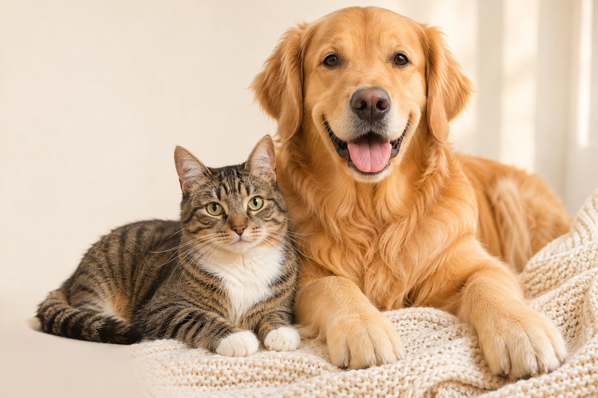
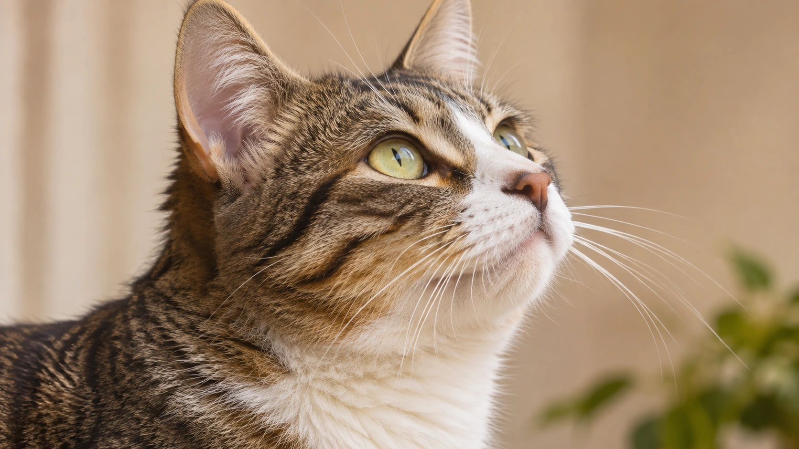

Muayene
Genel sağlık kontrolü ve değerlendirme.
Akkent, Şahinbey / Gaziantep
Dostlarınızın sağlık takibi, muayene, aşı ve temel veteriner hizmetleri için yanınızdayız.

Hizmetlerimiz
Genel sağlık kontrolü ve değerlendirme.
Rutin aşı uygulamaları ve takip planlaması.
İç ve dış parazitlere karşı koruyucu bakım.
Kimliklendirme ve kayıt işlemleri.
Ağız ve diş sağlığına yönelik uygulamalar.
Gerekli durumlarda tanısal testler ve analizler.

Evcil dostlarınızın sağlığı ve yaşam kalitesi için temel veteriner hizmetlerini, özenli ve dikkatli bir yaklaşımla sunuyoruz.